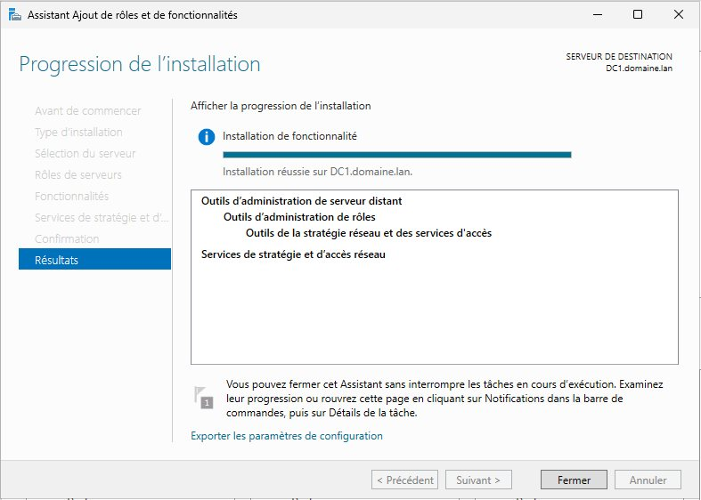
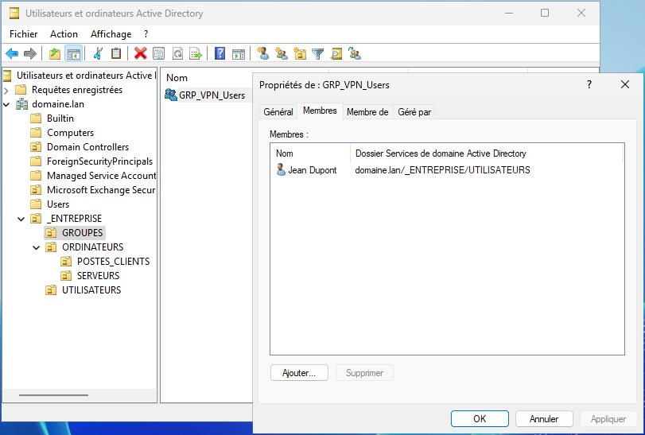

Étape 1 sur 5
Serveur RADIUS : rôle NPS et groupe VPN
Installer le rôle NPS sur le contrôleur de domaine, créer le groupe autorisé et inscrire le serveur dans l'annuaire.
Principe
NPS (Network Policy Server) est le serveur RADIUS de Microsoft : il fait le lien entre pfSense et l'Active Directory. L'authentification des utilisateurs VPN est ainsi déléguée à l'annuaire.
1. Installation du rôle
- Gestionnaire de serveur, puis Ajouter des rôles et des fonctionnalités.
- Cocher « Services de stratégie et d'accès réseau » et lancer l'installation.
2. Groupe de sécurité
- Dans Utilisateurs et ordinateurs Active Directory, créer le groupe GRP_VPN_Users.
- Y ajouter uniquement les collaborateurs autorisés à se connecter au VPN (ici un utilisateur de test).
3. Inscription du serveur
- Console NPS, clic droit sur NPS (Local).
- « Inscrire le serveur dans Active Directory », puis valider.
Captures


Savoir-faire mobilisés
- NPS / RADIUS
- Active Directory
- Groupes de sécurité